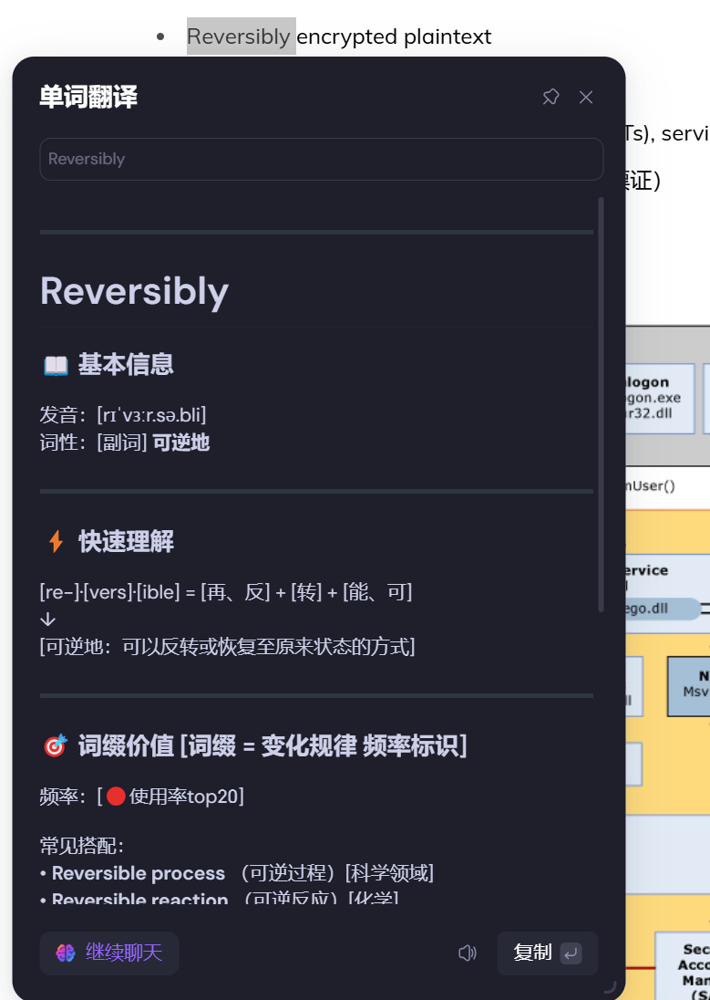

# 完善博客
因为我的 blog 是部署在 GitHub 上的，所以国内访问一直很不稳定，这周花了点时间解决了这个问题，简单分享一下我的方案：将 GitHub 的博客项目部署到 verlcel 上，vercel 会给你一个新的域名，但这个域名地址太长了，不美观，而且国内会有时候会 ban，所以我从 spaceship 买了个 blog 后缀的域名，配置了下 dns，将 vercel 的域名重定向到自己的域名，算是解决了这个问题。
顺便还解决了博客主页的封面问题，之前默认的图床一直解析不了图片，所以换了个新图床：Telegraph-Image，无墙免费免登录，速度也不错。图片是从这里拿的：wallhaven，一个免费的壁纸库，需要科学上网。每个文章的封面图都是通过 AI 生成的像素画。
# 跨年夜
还是第一次在陌生的城市跨年，下班后点了个外卖，整理了会博客，准备去 23 点 30 分去中山路体验下大城市跨年的氛围。
岁末的寒风在城市街巷间穿梭，却吹不散人们对跨年夜的热情。我到的时候，刚好临近十二点，人群开始朝十字路口聚集起来，大家默契的倒数着，当数字归零的那一刻，欢呼声，祝福声与天空上放飞的气球交织在一起，共同迎接新年的到来。紧接着，人群开始慢慢散去，街道又开始拥挤起来。
虽说跨年夜是充满欢声笑语，热情憧憬的新旧交替的夜晚，但我却觉得有些不自在，可能是一个人的缘故，热闹的街道上我显得有点格格不入，也可能是身处异乡，距离将那份家人和老友的温暖变得遥不可及。走出酒店到达目的地，我靠在柱子上等了几分钟，临近十二点拿出手机拍了十几秒的视频，最后跟着人群散去。有意思吗？没有，还很无聊，其实走出酒店一会后我就有点后悔了，从时间维度讲，午夜十二点的钟声响起，象征旧岁飘零，新岁降临，但跨年也不是为了这转瞬即逝的几秒钟，身边挚爱亲友的陪伴更像是真谛所在。
其实也可以不出去的，只是出差生活烦闷无趣，总想去找点仪式感，奈何节日的喧嚣和热闹反而放大了自身的孤寂，也说明我的内心世界还不够强大和丰富，时刻反省，继续前进。
回酒店路上遇到一只咪咪
# 其他碎片
-
春节倒计时
元旦过去了，顺手改成了春节倒计时
-
如何跳出信息茧房
分享了一种跳出信息茧房的方案，简单说就是删除抖音、头条等强个性化推荐的软件，订阅一些 RSS，配合 AI 总结解决时间成本。
再推荐一下这个宝藏论坛，Linux.do, 学习（摸鱼）的好地方
-
大家是怎么学外语的
提供的 prompt 看起来挺不错的。我希望能有一款浏览器插件，用户在阅读文章的时候，能把不懂的单词和对应的句子记录到这款插件上，并同步到多端方便学习，最好配上 AI 进行解释，这是我理想的背单词的方式，保持兴趣的同时，也丰富了专业相关的词汇量。
大佬提供的prompt
你是专业的词源分析专家。请按照以下结构，对给定单词进行全面而简洁的分析。分析时要特别注意用户提供的混淆点和记忆难点： --- # **[单词]** ### 📖 基本信息 发音：[音标] 词性：[词性缩写] [中文核心含义] 频率：[🔴极高频/🔵高频/⚪️中频] [使用场景说明] • 🔴 = 教育部考纲核心词汇前3000 • 🔵 = 教育部考纲核心词汇3000-5000 • ⚪️ = 教育部考纲核心词汇5000-8000 --- ### ⚡️ 快速理解 [词根]·[词缀] = [核心含义] + [变化含义] ↓ [最终含义的简单解释] --- ### 🔍 词根价值 [词根 = 基本含义 频率标识] 频率：[🔴派生词100+/🔵派生词50-100/⚪️派生词20-50] 常用家族： 词根 + 词缀组合： • [词根]·[词缀] ([完整单词]) [构词含义] → [现代含义] • [词根]·[词缀] ([完整单词]) [构词含义] → [现代含义] • [词根]·[词缀] ([完整单词]) [构词含义] → [现代含义] --- ### 🎯 词缀价值 [词缀 = 变化规律 频率标识] 频率：[🔴使用率top20/🔵使用率20-50/⚪️使用率50后] 常见搭配： • [例词] ([中文]) [使用场景] • [例词] ([中文]) [使用场景] • [例词] ([中文]) [使用场景] --- ### 📌 实用搭配 • [搭配1] [中文释义] [场景] • [搭配2] [中文释义] [场景] • [搭配3] [中文释义] [场景] 记忆技巧：（根据用户提供的混淆点定制） • [具体的记忆方法] • [实用的联想方式] --- 需要解析的单词：你要查的单词我目前的方案是配合 sider GPT 插件，添加提示词，类似这样:

局限性也很明显：不能保存，也不方便复习
-
分享我迭代多轮的学习助手 Prompt
好东西，下次试试